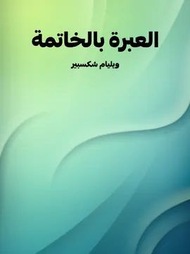

العبرة بالخاتمة

قراءة عربية أصلية محددة النطاق في الصفحات 9 إلى 11، 13 إلى 15 من ملف PDF المرتبط، وليست تلخيصا كاملا للكتاب. نناقش ما تدعمه هذه المقاطع فقط.
شكسبير بترجمة محمد عناني
يكتب محمد عناني في تصديره أن هذه هي المسرحية السابعة عشرة التي يقدمها لشكسبير، ترجمة عربية كاملة لمسرحية «العبرة بالخاتمة» وفق المصطلح العربي المأثور، وهو نص منظوم يتعذر إدراج صياغته الاصطلاحية في أي بحر من بحور الشعر العربي، وقد اختار هذه الصياغة لورود العنوان نفسه في الحوار المسرحي أكثر من مرة. ويعترف بطول مقدمته ويبررها بالصعوبات الهائلة التي تكتنف هذا النص الذي عانى التجاهل طويلًا من النقاد ومخرجي المسرح حتى منتصف القرن العشرين، فلما شاع تقديمه على الخشبة انقض عليه النقاد والدارسون كلٌّ بأسلحة نقدية مختلفة فتضاربت الآراء. حكاية هيلينا وبرترام، الحب والدهاء والشرط المستحيل، في ترجمة واحد من أهم مترجمي شكسبير إلى العربية (٢٦٢ صفحة).
زاوية وحدود القراءة
قراءة موجزة من ص ٩ إلى ص ١١ ومن ص ١٣ إلى ص ١٥ من أصل ٢٦٢ صفحة، تعرض تصدير المترجم ومطلع المسرحية، لا النص كاملًا.
الطبعة والقراءة
صدرت هذه النسخة عن مؤسسة هنداوي عام ٢٠٢٦. جميع حقوق النشر الخاصة بتصميم هذا الكتاب وتصميم الغلاف محفوظة لمؤسسة هنداوي. جميع حقوق النشر الخاصة بنص العمل الأصلي محفوظة للسيد الدكتور محمد عناني.
تنزيل PDF المجاني ↓ القراءة والمصدر الرسمي ↗